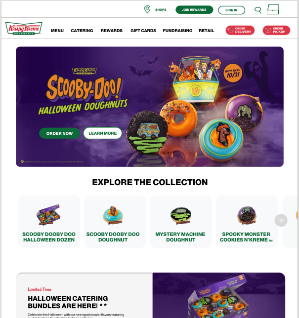

Image of Wireframe
Accessibility
I was not able to use the WAVE tool to review the KrispyKreme site, but was able to review another webpage. I chose to review the waukeganparks.org page. Using the tool I was able to find the following:
- Transparent images utilized in webpage could use a background color as default when an image doesn't work.
- Some images and links could use descriptive text explaining what each item is. WCGA at it as guideline 1.1. Big benefit to those who are not able to see certain images and for programming purposes would be beneficial.